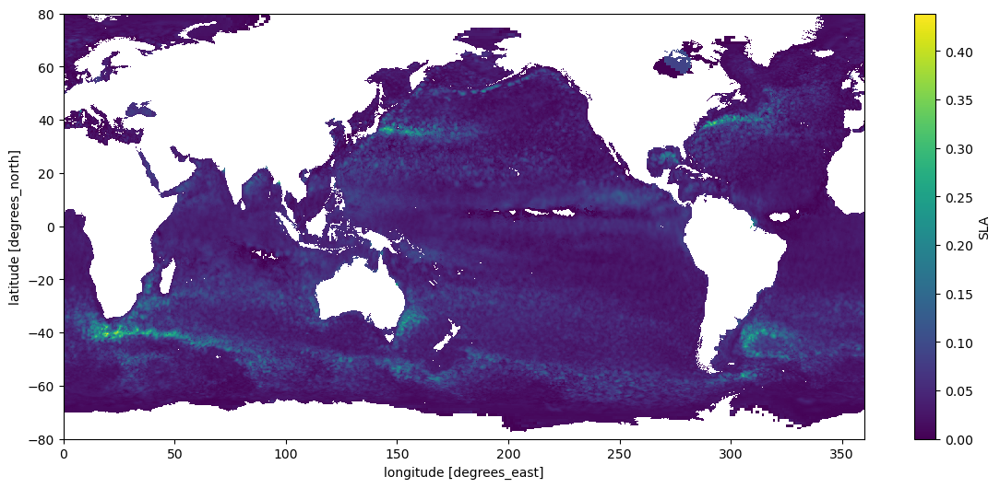

import earthaccessif earthaccess.__version__!="0.5.3":print("Installing the latest version of earthaccess, please restart the kernel after this cell gets executed")!pip install earthaccess==0.5.3else:print("Using the latest version of earthaccess")pass
Using the latest version of earthaccess
print(f"using earthaccess v{earthaccess.__version__}")auth = earthaccess.login()# are we authenticated?ifnot auth.authenticated:# ask for credentials and persist them in a .netrc file auth.login(strategy="interactive", persist=True)
using earthaccess v0.5.3
EARTHDATA_USERNAME and EARTHDATA_PASSWORD are not set in the current environment, try setting them or use a different strategy (netrc, interactive)
You're now authenticated with NASA Earthdata Login
Using token with expiration date: 10/27/2023
Using .netrc file for EDL
Why earthaccess?
earthaccess is a Python library that simplifies data discovery and access to NASA Earth science data by providing an abstraction layer for NASA’s Common Metadata Repository (CMR) Search API so that searching for data can be done using a simpler notation instead of low level HTTP queries.
Authentication in the cloud
If the collection is a cloud-hosted collection we can print the summary() and get the S3 credential endpoint. These S3 credentials are temporary and we can use them with third party libraries such as s3fs, boto3 or awscli.
from pprint import pprint# We'll get 4 collections that match with our keywordscollections = earthaccess.collection_query().keyword("SEA SURFACE HEIGHT").cloud_hosted(True).get(4)# Let's print 2 collectionsfor collection in collections[0:2]:# pprint(collection.summary())print(pprint(collection.summary()), collection.abstract(), "\n", collection["umm"]["DOI"], "\n\n")
{'cloud-info': {'Region': 'us-west-2',
'S3BucketAndObjectPrefixNames': ['podaac-ops-cumulus-public/SEA_SURFACE_HEIGHT_ALT_GRIDS_L4_2SATS_5DAY_6THDEG_V_JPL2205/',
'podaac-ops-cumulus-protected/SEA_SURFACE_HEIGHT_ALT_GRIDS_L4_2SATS_5DAY_6THDEG_V_JPL2205/'],
'S3CredentialsAPIDocumentationURL': 'https://archive.podaac.earthdata.nasa.gov/s3credentialsREADME',
'S3CredentialsAPIEndpoint': 'https://archive.podaac.earthdata.nasa.gov/s3credentials'},
'concept-id': 'C2270392799-POCLOUD',
'file-type': "[{'Format': 'netCDF-4', 'FormatType': 'Native', "
"'AverageFileSize': 9.7, 'AverageFileSizeUnit': 'MB'}]",
'get-data': ['https://cmr.earthdata.nasa.gov/virtual-directory/collections/C2270392799-POCLOUD',
'https://search.earthdata.nasa.gov/search/granules?p=C2270392799-POCLOUD'],
'short-name': 'SEA_SURFACE_HEIGHT_ALT_GRIDS_L4_2SATS_5DAY_6THDEG_V_JPL2205',
'version': '2205'}
None This dataset provides gridded Sea Surface Height Anomalies (SSHA) above a mean sea surface, on a 1/6th degree grid every 5 days. It contains the fully corrected heights, with a delay of up to 3 months. The gridded data are derived from the along-track SSHA data of TOPEX/Poseidon, Jason-1, Jason-2, Jason-3 and Jason-CS (Sentinel-6) as reference data from the level 2 along-track data found at https://podaac.jpl.nasa.gov/dataset/MERGED_TP_J1_OSTM_OST_CYCLES_V51, plus ERS-1, ERS-2, Envisat, SARAL-AltiKa, CryoSat-2, Sentinel-3A, Sentinel-3B, depending on the date, from the RADS database. The date given in the grid files is the center of the 5-day window. The grids were produced from altimeter data using Kriging interpolation, which gives best linear prediction based upon prior knowledge of covariance.
{'DOI': '10.5067/SLREF-CDRV3', 'Authority': 'https://doi.org'}
{'cloud-info': {'Region': 'us-west-2',
'S3BucketAndObjectPrefixNames': ['nsidc-cumulus-prod-protected/ATLAS/ATL21/003',
'nsidc-cumulus-prod-public/ATLAS/ATL21/003'],
'S3CredentialsAPIDocumentationURL': 'https://data.nsidc.earthdatacloud.nasa.gov/s3credentialsREADME',
'S3CredentialsAPIEndpoint': 'https://data.nsidc.earthdatacloud.nasa.gov/s3credentials'},
'concept-id': 'C2753316241-NSIDC_CPRD',
'file-type': "[{'FormatType': 'Native', 'Format': 'HDF5', "
"'FormatDescription': 'HTTPS'}]",
'get-data': ['https://search.earthdata.nasa.gov/search?q=ATL21+V003'],
'short-name': 'ATL21',
'version': '003'}
None This data set contains daily and monthly gridded polar sea surface height (SSH) anomalies, derived from the along-track ATLAS/ICESat-2 L3A Sea Ice Height product (ATL10, V6). The ATL10 product identifies leads in sea ice and establishes a reference sea surface used to estimate SSH in 10 km along-track segments. ATL21 aggregates the ATL10 along-track SSH estimates and computes daily and monthly gridded SSH anomaly in NSIDC Polar Stereographic Northern and Southern Hemisphere 25 km grids.
{'DOI': '10.5067/ATLAS/ATL21.003'}
A year of data
Things to keep in mind:
this particular dataset has data until 2019
this is a global dataset, each granule represents the whole world
earthaccess can query for datasets or data on a particular dataset, it can also use python objects to concatenate the query paramters or we can use a top level function.
Important: So far we are only working with metadata records from NASA CMR, the results we get are just json objects with information about how and where to get the actual data files.
# This is equivalent to the method above.results = earthaccess.search_data( short_name='SEA_SURFACE_HEIGHT_ALT_GRIDS_L4_2SATS_5DAY_6THDEG_V_JPL2205', cloud_hosted=True, temporal=("2017-01", "2018-01"), count=10)print(f"Items retrieved: {len(results)}")
Granules found: 73
Items retrieved: 10
Working with the URLs directly
If we chose, we can use earthdata to grab the file’s URLs and then download them with another library (if we have a .netrc file configured with NASA’s EDL credentials) Getting the links to our data is quiet simple with the data_links() method on each of the results:
# the collection is cloud hosted, but we can access it out of AWS with the regular HTTPS URLgranules[0].data_links(access="out_of_region")
We can use earthaccess to stream files directly into xarray, this will work well for cases where:
Data is in NetCDF/HDF5/Zaar format
xarray can read bytes directly for remote datasets only with h5netcdf and scipy back-ends, if we deal with a format that won’t be recognized by these 2 backends xarray will raise an exception.
Data is not big data (multi TB)
not fully tested with Dask distributed
Data is gridded
xarray works better with homogeneous coordinates, working with swath data will be cumbersome.
Data is chunked using reasonable large sizes(1MB or more)
If our files are chunked in small pieces the access time will be orders of magnitude bigger than just downloading the data and accessing it locally.
Opening a year of SSH (SEA_SURFACE_HEIGHT_ALT_GRIDS_L4_2SATS_5DAY_6THDEG_V_JPL1812) data (1.1 GB approx) can take up to 5 minutes streaming the data out of region(not in AWS) The reason for this is not that the data transfer is order of magintude slower but due the client libraries not fetching data concurrently and the metadata of the files in HDF is usually not consolidated like in Zaar, hence h5netcdf has to issue a lot of requests to get the info it needs.
Note: we are looping through each year and getting the metadata for the first granule in May
# storing the resulting granule metadatagranules = []# we just grab 1 granule from May for each year of the datasetfor year inrange(1999, 2019):print(f"Retrieving data for year: {year}") results = earthaccess.search_data( doi ="10.5067/SLREF-CDRV3", temporal=(f"{year}-05", f"{year}-06") )iflen(results)>0: granules.append(results[0])print(f"Total granules: {len(granules)}")
Retrieving data for year: 1999
Granules found: 7
Retrieving data for year: 2000
Granules found: 7
Retrieving data for year: 2001
Granules found: 7
Retrieving data for year: 2002
Granules found: 7
Retrieving data for year: 2003
Granules found: 7
Retrieving data for year: 2004
Granules found: 6
Retrieving data for year: 2005
Granules found: 6
Retrieving data for year: 2006
Granules found: 6
Retrieving data for year: 2007
Granules found: 6
Retrieving data for year: 2008
Granules found: 6
Retrieving data for year: 2009
Granules found: 6
Retrieving data for year: 2010
Granules found: 6
Retrieving data for year: 2011
Granules found: 6
Retrieving data for year: 2012
Granules found: 6
Retrieving data for year: 2013
Granules found: 6
Retrieving data for year: 2014
Granules found: 6
Retrieving data for year: 2015
Granules found: 6
Retrieving data for year: 2016
Granules found: 7
Retrieving data for year: 2017
Granules found: 7
Retrieving data for year: 2018
Granules found: 7
Total granules: 20
What earthaccess.open() do?
earthaccess.open() takes a list of results from earthaccess.search_data() or a list of URLs and creates a list of Python File-like objects that can be used in our code as if the remote files were local. When executed in AWS the file system used is S3FS when we open files outside of AWS we get a regular HTTPS file session.
%%timeimport xarray as xrfileset = earthaccess.open(granules)ds = xr.open_mfdataset(fileset, chunks={})ds
Opening 20 granules, approx size: 0.18 GB
CPU times: user 4.84 s, sys: 1.02 s, total: 5.86 s
Wall time: 23.2 s
/srv/conda/envs/notebook/lib/python3.9/site-packages/dask/array/numpy_compat.py:41: RuntimeWarning: invalid value encountered in divide
x = np.divide(x1, x2, out)
<matplotlib.collections.QuadMesh at 0x7fb6523b72e0>

from pyproj import Geodimport numpy as npdef ssl_area(lats):""" Calculate the area associated with a 1/6 by 1/6 degree box at latitude specified in 'lats'. Parameter ========== lats: a list or numpy array of size N the latitudes of interest. Return ======= out: Array (N) area values (unit: m^2) """# Define WGS84 as CRS: geod = Geod(ellps='WGS84') dx=1/12.0# TODO: explain this c_area=lambda lat: geod.polygon_area_perimeter(np.r_[-dx,dx,dx,-dx], lat+np.r_[-dx,-dx,dx,dx])[0] out=[]for lat in lats: out.append(c_area(lat))return np.array(out)# note: they rotated the data in the last release, this operation used to be (1,-1)ssh_area = ssl_area(ds.Latitude.data).reshape(-1,1)print(ssh_area.shape)
# This dataset was moved from opendap, contains the historic in situ datagranule = earthaccess.search_data(concept_id="C2491724765-POCLOUD")[0].data_links()[0]gmsl = earthaccess.open([granule])[0]

![]()
![]()
![]()
![]()